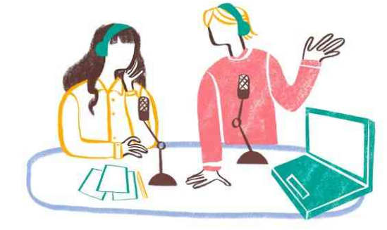

Podcast sebagai Medium Inspiratif untuk Anak Muda: Mendengarkan, Belajar, dan Berkarya
Podcast, sebagai bentuk konten audio digital, telah menjadi medium yang semakin populer di kalangan anak muda. Dengan beragam topik dan gaya penyampaian yang menarik, podcast telah menjadi sumber inspirasi yang signifikan bagi anak muda. Artikel ini akan menjelajahi peran podcast sebagai medium inspiratif untuk anak muda, dengan menyoroti kemampuannya dalam mendengarkan, belajar, dan berkarya. Mendengarkan podcast memberikan kesempatan bagi anak muda untuk mendengarkan cerita, wawancara, dan diskusi tentang berbagai topik menarik. Anak muda dapat memilih podcast yang sesuai dengan
minat mereka, seperti musik, seni, kewirausahaan, kesehatan mental, dan sebagainya. Mendengarkan podcast memungkinkan mereka untuk mendapatkan wawasan baru, mengembangkan pemahaman yang lebih luas, dan mendapatkan pengalaman dari orang-orang yang berpengalaman dalam bidang tersebut. Belajar Podcast juga merupakan sumber pembelajaran yang berharga bagi anak muda. Banyak podcast edukatif yang didedikasikan untuk topik-topik seperti sejarah, sains, teknologi, sastra, dan banyak lagi. Anak muda dapat memanfaatkan podcast ini sebagai tambahan dalam proses pembelajaran formal mereka. Dengan pendekatan yang santai dan interaktif, podcast dapat membuat pembelajaran menjadi lebih menyenangkan dan memikat. Berkarya Podcast memberikan platform bagi anak muda untuk berkreasi dan berkarya. Mereka dapat membuat dan mengelola podcast mereka sendiri, berbagi cerita, wawancara, atau konten kreatif lainnya. Ini memungkinkan anak muda untuk mengembangkan keterampilan komunikasi, kemampuan berbicara di depan umum, dan penguasaan teknologi audio. Podcast juga dapat menjadi wadah untuk membagikan pandangan mereka tentang isu-isu sosial, politik, dan budaya yang penting bagi generasi muda. Podcast sering kali menghadirkan narasi inspiratif dan motivasi yang dapat mempengaruhi anak muda secara positif. Melalui cerita kehidupan nyata, pengalaman, dan nasihat dari pembicara yang menginspirasi, podcast dapat memberikan dorongan dan motivasi kepada anak muda untuk mengatasi tantangan, mengejar impian mereka, dan mengembangkan potensi penuh mereka. Podcast menciptakan komunitas dan koneksi antara anak muda dengan pendengar lainnya. Anak muda dapat berpartisipasi dalam diskusi melalui komentar, ikut serta dalam forum diskusi, atau bahkan berkolaborasi dengan konten kreator lainnya. Ini membantu anak muda merasa terhubung dengan orang-orang sebaya mereka yang memiliki minat dan passion serupa, dan memperluas jaringan sosial mereka. Podcast telah menjadi medium inspiratif yang kuat bagi anak muda. Melalui podcast, mereka dapat mendengarkan, belajar, dan berkarya di berbagai bidang. Podcast memberikan akses ke pengetahuan, wawasan, dan kisah inspiratif, sambil memberikan ruang bagi anak muda untuk berkreasi dan berbagi pandangan mereka dengan audiens yang lebih luas. Dalam era digital yang terus berkembang, podcast memainkan peran penting dalam memberdayakan anak muda untuk mengembangkan diri, mengejar minat mereka, dan menjadi agen perubahan positif dalam masyarakat.